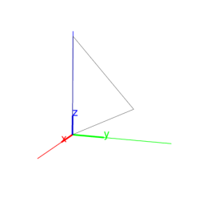
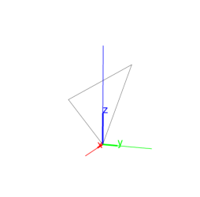

13.7.2 Isosceles triangles in space: isosceles_triangle
See section 12.8.2 for isosceles triangles in the
plane.
The isosceles_triangle command returns and draws an
isosceles triangle. It takes as arguments one of the following:
-
Three points, A, B and P.
The first two points A and B are vertices of the
triangle, the third point P determines the plane and
orientation of the triangle. The orientation is so that angle
BAP is positive, and the equal interior angles of the
isosceles triangle are determined by angle ABP.
Input:
A := point(0,0,0); B := point(3,3,3); P := point(0,0,3)
then:
isosceles_triangle(A,B,P);
Output:

- Two points, A and B, and a list consisting
of a point P and a real number c.
The points A and B are vertices of the triangle
and P determines the plane and orientation of the triangle
as above. The number c is the measure of the equal
interior angles.
Input:
isosceles_triangle(A,B,[P,3*pi/4])
Output:

isosceles_triangle can take an optional fourth argument,
which is a variable which will be assigned to the third vertex of the
triangle.
Input:
isosceles_triangle(A,B,[P,3*pi/4],C)
then:
coordinates(C)
Output:
[(-3*sqrt(2) - 3)/2, (-3*sqrt(2) -3)/2,
(-3*sqrt(2) + 6)/2]